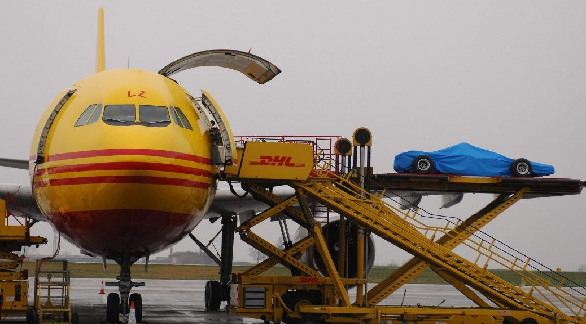

Formula 1, sadece dünyanın en prestijli motor sporları organizasyonlarından biri değil, aynı zamanda devasa bir lojistik ve ulaşım mücadelesidir.
Her sezon, F1 takımları 20’den fazla ülkede düzenlenen yarışlara katılmak için kıtalar arası yolculuklar yapar. Bu yolculuklar, takımların araçları,
ekipmanları, yedek parçaları ve personeli için olağanüstü bir ulaşım planlaması gerektirir.
Bir Formula 1 sezonu, genellikle Mart ayında başlayıp Kasım ayında sona erer. Bu süreçte yarış takvimi, Avrupa’dan Asya’ya, Amerika’dan Orta Doğu’ya
uzanan bir güzergâhı kapsar. Her yarışın ardından, genellikle
bir sonraki yarışın düzenleneceği yere sadece birkaç gün içinde ulaşılması gerekir. Bu durum sadece zamana karşı bir yarış değil, aynı zamanda mükemmel bir organizasyon ve
koordinasyon gerektirir.
Aşağıdaki tabloda 2025 yılının yarış takvimi yer almakta:
Sıra
Yarış
Pist
Tarih
1
Avustralya Grand Prix
Albert Park
14-16 Mart
2
Çin Grand Prix
Shanghai International Circuit
21-23 Mart
3
Japonya Grand Prix
Suzuka
4-6 Nisan
4
Bahrain Grand Prix
Bahrain International Circuit
11-13 Nisan
5
Suudi Arabistan Grand Prix
Jeddah Corniche Circuit
18-20 Nisan
6
Miami Grand Prix
Miami International Autodrome
2-4 Mayıs
7
Emilia Romagna Grand Prix
Imola
16-18 Mayıs
8
Monako Grand Prix
Monako
23-25 Mayıs
9
İspanya Grand Prix
Circuit de Catalunya
30 Mayıs - 1 Haziran
10
Kanada Grand Prix
Circuit Gilles Villeneuve
13-15 Haziran
11
Avusturya Grand Prix
Red Bull Ring
27-29 Haziran
12
Britanya Grand Prix
Silverstone
4-6 Temmuz
13
Belçika Grand Prix
Spa-Francorchamps
25-27 Temmuz
14
Macaristan Grand Prix
Hungaroring
1-3 Ağustos
15
Hollanda Grand Prix
Zandvoort
29-31 Ağustos
16
İtalya Grand Prix
Monza
5-7 Eylül
17
Azerbaycan Grand Prix
Baku City Circuit
19-21 Eylül
18
Singapur Grand Prix
Singapur
3-5 Ekim
19
Amerika Grand Prix
Circuit of the Americas
17-19 Ekim
20
Meksika Grand Prix
Autodromo Hermanos Rodriguez
24-26 Ekim
21
Brezilya Grand Prix
Interlagos
7-9 Kasım
22
Las Vegas Grand Prix
Las Vegas Strip Circuit
20-22 Kasım
23
Katar Grand Prix
Losail International Circuit
28-30 Kasım
24
Abu Dhabi Grand Prix
Yas Marina
5-7 Aralık
Takımlar, yarış ekipmanlarını taşımak için genellikle özel kargo uçaklarını kullanır. Bunun yanı sıra, daha kısa mesafelerde karayolu ve denizyolu taşımacılığı da devreye girer. Her
bir Formula 1 aracı, milyonlarca dolar değerindedir ve en ufak bir hasar bile büyük kayıplara yol açabilir. Bu nedenle, taşımacılık sürecinde en yüksek güvenlik standartları uygulanır.

DHL Firmasına Ait Bir Kargo Uçağı
Formula 1, bu zorlu lojistik sürecin üstesinden gelerek sadece hız ve teknolojinin değil, aynı zamanda global bir organizasyon becerisinin de zirvesinde olduğunu kanıtlar. Yarış takvimi
boyunca dünyanın dört bir yanındaki pistlerde yaşanan rekabet, sahne arkasında süren bu devasa ulaşım mücadelesiyle desteklenir.